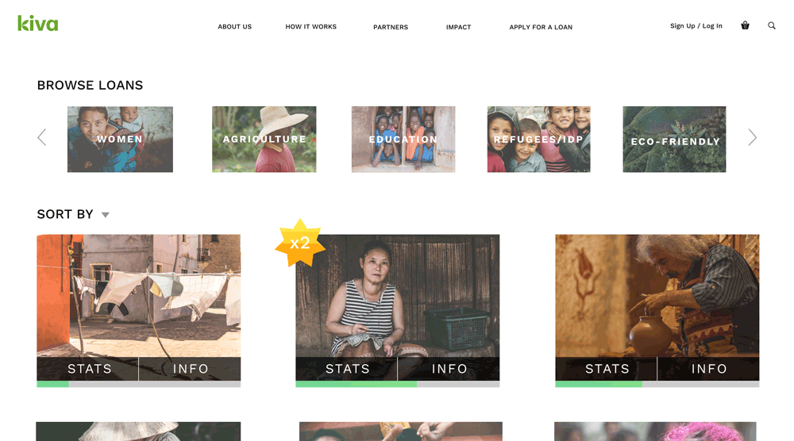
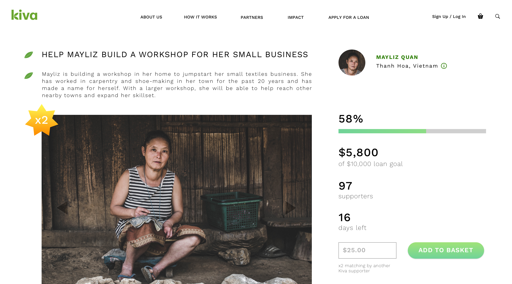
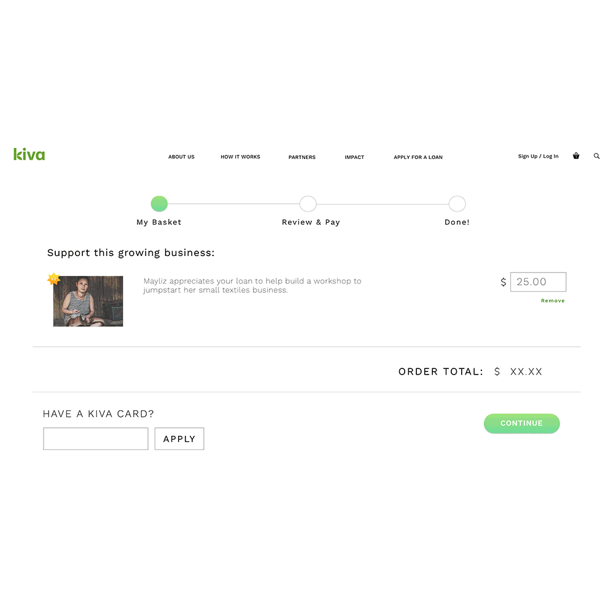

TEAM: Ramzi Jneid, Alex Andrea, Ashley Chen
Kiva is an international micro-loan service that aims to help create opportunity and lift individuals to a better state of being. Kiva recommends and facilitates causes that are impactful, productive, and enables young businesses to shape the future for themselves or their entire community.
"With a small loan of $25, you can make opportunity, a reality"
User Testing
|
UI Mockups and Wireframes
|
Kiva is an existing app that allows normal people to loan money to others in need - to foster growth and opportunity for themselves and their community. My teammates and I are self-proclaimed empaths, we wanted to contribute to something bigger than ourselves. We discovered a fundamental problem with how Kiva markets itself to the modern "do-good opportunist" - while micro-financing is in the 2010's, it's current design is stuck in the 2000's.
We first worked with Kiva on this pro-bono project to reimagine Kiva's website so that it fosters trust between the loaner (you), the lendee (them), and the provider (Kiva) in a digitally-savvy way.
We learned that the problem lies in how the modern technology-user views services where they spend their money (i.e. e-commerce, charities, crowd-funding, etc). Of over a thirty individuals in our study, 46% of individuals ages 22-37 and 40% of individuals ages 38-53 currently donate to charitable and/or crowdfunding campaigns.
25% of total respondents currently complete their donations on mobile devices, and 51% said an app - web or mobile - that simplified online giving without the bulk and skepticism would increase overall conversion and traffic.
To determine the prime features Kiva needed to establish trust for its users, we surveyed over 30 different individuals and asked them what features inspire trust and feelings of generosity on applications where individuals "spend" money.
|  |  |
When it comes down to putting money into charitable services, people are generally skeptical because of a lack of knowledge of what the product is, and where their money is going - especially if they're not getting anything in return (i.e. a package in the mail when online shopping!).
We designed a feature that allows users to see at a glance key features of a cause + what story they want to be a part of - every step of the way - without complicating the process.
|  |
The more we learned about the simplicity of e-commerce sites being the standard of user's online money spending process, the more our team married the simplicity of it, with the trust + transparency developed through the user's experience on Kiva.
By giving users the choice to view and review where they are in the checkout process, users are able to take necessary steps to fulfill their role in supporting a cause- both with the lendee and Kiva without any complications. For example, this checkout process walks the user through the mandatory steps (i.e. voluntary donation to Kiva, to help them continue as a non-profit; Pay-Pal/ payment options) to fulfill their "order", allowing them to fully commit with intention, to a worthwhile cause.
Users have the chance, throughout their entire experience on Kiva, to learn and actively engage in someone's story. By providing a simple, yet thorough flow of the site, all parties can benefit - the user can build connection with causes that have lasting effects, the lendees have a support system to help elevate lives, and Kiva can increase average conversion rates by ensuring commited, returning users.
Working on Kiva was, to say the least, pretty difficult. Because we discovered such a fundamental problem with its original design, it allowed us to reflect on how young people and adults can play a greater role on a worldwide scale with the help of good design on a holistic scale. Charitable online/mobile services for the most part, is uncharted territory - and although crowd-funding competitors like GoFundMe and Kickstarter exist, what about micro-financing?
We had to identify what wasn't working with the current site, and try to create a solution that married the efficiency and simplicity of e-commerce, with the intention of charity.
One major learning moment happened during our testing phase - we had/still have the intention of including social media links for each cause, but learned through user feedback that because the concept of micro-loans is somewhat detached opposed to charities or crowdfunding, sharing causes through social media may not increase willingness to lend a heand through financing. Playing a role through Kiva then transformed into a very deliberate application, where those that want to help, can help.
If we had more time and resources, we would take steps to map out the entire user journey throughout the application to create a more comprehensive experience.
{kind=link}